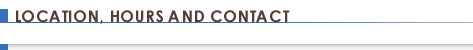

Appointments
Call (202) 299-9288 . If you get our voicemail, leave your name and phone number, speaking very clearly and slowly. Please leave your phone number twice.
If wanting to schedule an appointment, please book a time that is appropriate for you as we charge 100% for appointments and tardies results in a shorter, paid appointment. We are very respectful of the time of our clients and take you on time!
The earliest and latest appointments in the day are the most in demand so booking the middle of the day usually results in getting an appointment sooner.
Location
Skin Rejuvenation Clinic is conveniently located in downtown Washington DC, nestled in the first floor of a beautiful Victorian rowhome in Dupont Circle. We are situated one and a half blocks from the Dupont Circle Metro Station on lovely 19th street NW between Q & R. Clients enjoy a simple yet elegant setting which blends a fully equipped clinic and office with warm Victorian decor, antique furniture, and an abundance of natural light.
1630A 19th Street NW
Washington, DC 20009
Hours
Clients are welcome to schedule an appointment Monday through Thursday between the hours of 7:30am and 6:30pm. 24 hour notice is required for all cancellations to avoid a full charge of the appointment fee.
Contact
Skin Rejuvenation Clinic
1630A 19th Street NW
Washington, DC 20009
Tel: 202.299.9288
email: kkailian@gmail.com